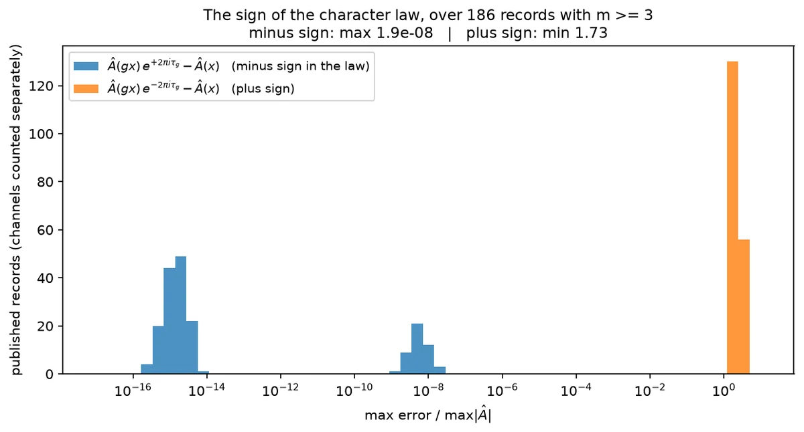
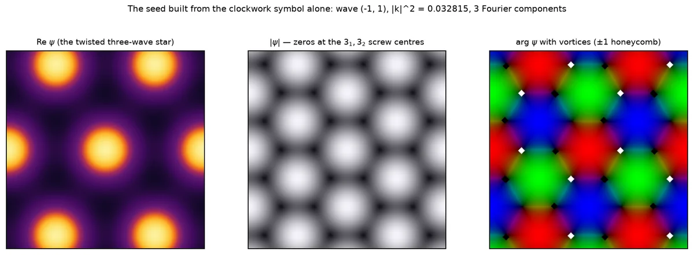

Animated groups · reports · magic theorem
A magic theorem for clockwork animations
What is being claimed#
Conway's Magic Theorem says that a wallpaper signature is legal exactly when its cost is 2. This report is the same shape of statement one level up. Decorate each symmetry of a wallpaper group with a fraction of a period — the time by which the animation must be shifted for that symmetry to hold — and a second closure identity appears, from the same orbifold relation, with the same proof in one line:
Σc kc/nc ∈ ℤ.
Conway's cost balances the geometry; this residue balances the choreography. It holds in all 68 entries of this project's catalogue, and — like Conway's — it enumerates: on the orbifold 333 there are 27 ways to hang offsets on the three cone classes, the identity keeps 9, relabelling collapses those to 4, and the catalogue's four p3 clockwork groups are exactly those four.
The identity does not stand alone. It is what makes two other forced structures compatible. A rotation centre whose generator costs a non-zero fraction of a period must be a zero of the first temporal harmonic — a point of the picture that does not oscillate at the fundamental frequency at all — and the phase must wind around it by an amount the offset fixes modulo the order of the centre (Theorem B). Those windings must cancel over one cell (Theorem C). B fixes their sum modulo 1 and C demands it be an integer, so B and C are simultaneously satisfiable exactly when the residue identity holds. That is Theorem D, and it is load-bearing rather than decorative.
The five statements, in one place.
- A — the j-th temporal harmonic transforms under a one-dimensional character: Âj(gx) = e−2πijτgÂj(x). The sign is a minus, and that was settled by measurement.
- B — at a rotation centre of order n whose generator carries τ = k/n: a forced zero when jk ≢ 0, an angular selection rule, and a winding wj ≡ −jk (mod n) — or no index at all, which is a genuine fourth case that occurs in the data.
- C — the indices over one primitive cell sum to 0, weighted 1/nc per cone class.
- D — Σkc/nc ∈ ℤ, and B and C are compatible iff it holds.
- E — a reflection forces τ ∈ {0, ½}; a half-period mirror is a nodal line, not a point; a neutral mirror carries no charge; a dihedral half-offset centre cannot have an isolated zero.
Everything is a statement about one object: the first temporal harmonic of the field, one complex number per point of the plane. None of it mentions the equation that produced the animation, so none of it can be used up by changing the equation. What changes with the equation is only which of the permitted structures gets realised — and the last section of this report is about exactly that gap.
Why this exists, and what it is for. The project it comes from generates looping reaction–diffusion animations whose wallpaper symmetries hold only after a time shift. Before any solver is started, these statements say where the picture must be dark, how much phase must wind around each dark point, and how the windings must balance — so a seed can be drawn by hand, and a converged answer can be checked against a prediction made before it was computed. The tutorial How to find a time-symmetric animation does that, twice. The making of this site is the timeline.

Shown at its own size here: drag the diagram sideways to read its labels.
Before any solver is started, the symbol alone decides a great deal about the picture: which points must be dark, how much phase must wind around each of them, and how the windings must balance across a cell. What follows is that statement, proved, and then tested against every animation the project has published. It is deliberately arranged the way Conway's Magic Theorem is arranged — a closure identity that the orbifold forces, and a topological budget that the identity makes satisfiable.
The data: a clockwork group#
A clockwork animation is a field u(x, t) on the plane, periodic in time with period T, together with a wallpaper group G and a map τ assigning to each symmetry a fraction of the period, such that
Apply the relation twice, once at gx and once at x, and τhg = τh + τg drops out: τ is a homomorphism G → ℝ/ℤ, the modulo coming from T-periodicity. That single fact carries the whole theorem. Two consequences are worth naming at once. Its kernel K = ker τ is the subgroup of instantaneous symmetries — the ones that hold frame by frame — and the quotient G/K embeds in ℝ/ℤ. It is not automatic that it is finite: a travelling wave u(x, t) = f(k·x − ωt) satisfies the defining relation for every lattice translation with τ generically irrational, and then the image of τ is dense. Finiteness is an assumption here, and it is the one the catalogue encodes; for a group with a rotation it is also forced, because invariance of τ on the translations under an order-n rotation clears the denominators. Granted finiteness, a finite subgroup of ℝ/ℤ is cyclic, so G/K is cyclic of some order m.
This is the same data as a colour group whose colour permutation is cyclic: a wallpaper group with a homomorphism onto ℤ/m, colours replaced by time offsets k/m. Every entry of the catalogue is listed in exactly that form on the correspondence pages — for the worked example below, correspondence-p3.html#g227, clockwork symbol r33₁3₂, orbifold 333, m = 3. The catalogue's own notation page defines the decorations used below — the subscripts, the tilde for a half-period mirror, the prefixes c and r: notation.html. It is also the wallpaper instance of the pair (H, K) of spatio-temporal and spatial symmetries that Golubitsky and Stewart attach to a periodic solution of an equivariant system, with H = G and H/K cyclic — here cyclic by construction rather than by hypothesis.
The object every statement below is about is the first temporal harmonic of a channel,
It is one complex number per point: the amplitude and phase with which that point oscillates at the fundamental frequency. Two pieces of housekeeping, once. A rotation centre in the plane is a gyration point; its image downstairs is a cone point of the orbifold, and "cone class" below means one orbit of gyration points. And index, winding and charge are the same integer throughout — the number of turns arg  makes on a small loop — called by whichever of the three names the surrounding sentence wants. On a stored movie it is one bin of a fast Fourier transform down the frame axis, which is exact for the band-limited films the repository saves. Everything that follows is a statement about Â, not about the equation that produced it — no reaction–diffusion, no near-Hopf assumption, no small amplitude.
The worked example throughout is the catalogue entry g227: p3, orbifold 333, clockwork symbol r33₁3₂, m = 3, and — as a colour group — the entry at correspondence-p3.html#g227. The decorations are defined on the catalogue's notation page.
Theorem A — the character law#
Theorem A.
For every g ∈ G and every integer j,
That is, Âj transforms under the one-dimensional character χj(g) = e−2πijτg of G, which factors through G/K ≅ ℤ/m.
Proof
Substituting s = t + τgT in the defining relation gives u(gx, s) = u(x, s − τgT) for all s. Put that into the integral defining Âj(gx) and shift the variable of integration by τgT; the integrand is T-periodic, so the shifted interval is harmless, and the shift leaves behind the constant factor e−2πijτg. ∎
The sign is a minus. It is worth saying loudly because the plus sign is the natural guess and it is wrong: on the published g227 record the minus law holds to 8.6 × 10⁻¹⁶ — on a symmetrised export, of which more below — while the plus law is off by exactly 1.7320508 = √3 = |1 − e4πi/3|, the largest error the character can produce. Flip any one of three conventions — the sense of the rotation, the sense of the winding, or the sign in the exponent of  — and the prediction flips with it. The repository's own earlier note left that sign as an unresolved ∓; this fixes it.
A corollary and an honest limit. Expanding u in harmonics, the j-th term lives in the χj sector: the mean field is genuinely G-invariant and all the defects live in the sectors with j not a multiple of m. But Âj ≡ 0 always satisfies the constraint, so the theorem gives no lower bound — an animation may hide its structure in a harmonic that vanishes. In the 532 record–channel pairs tested, none did: |Â₁| relative to the field's span stayed between 0.172 and 0.251.

Theorem B — what a cone point must contain#
Theorem B.
Let p be fixed by a rotation of order n ≥ 2, taken counterclockwise by +2π/n, and let that rotation carry τ = k/n. Then for every j:
- Forced zero. If jk ≢ 0 (mod n) then Âj(p) = 0.
- Angular selection. In polar coordinates about p, only the angular harmonics eiνθ with ν ≡ −jk (mod n) survive.
- Forced winding. If Âj does not vanish on a small circle about p, its winding number there satisfies wj(p) ≡ −jk (mod n).
- Or no index at all. If Âj vanishes along a curve through p, no winding exists there and 2 and 3 say nothing. This alternative is genuine and occurs in the data.
Proof
Write z for the complex coordinate centred at p; the rotation is z ↦ ζz with ζ = e2πi/n, and Theorem A reads Âj(ζz) = e−2πijk/nÂj(z). Expand the circle of radius r as Σν cν(r) eiνθ. Matching Fourier coefficients gives cν(r)(e2πiν/n − e−2πijk/n) = 0, so cν vanishes unless ν ≡ −jk, which is claim 2. Continuity at p kills every cν with ν ≠ 0 as r → 0, and Âj(p) is the limit of c0; if ν = 0 is excluded the value is 0, which is claim 1 (or directly: the value at a fixed point equals a non-trivial root of unity times itself). For claim 3, let Δ be the continuous increment of arg Âj across one sector of angle 2π/n. The relation makes the increment the same on all n sectors and fixes it modulo 2π as −2πjk/n, so the total winding is 2πwj = nΔ = −2πjk + 2πnℓ. ∎
The two halves are worth separating. Claim 1 says where the picture must be dark: any rotation centre whose generator carries a non-zero offset is a zero of the first harmonic — a point that does not oscillate at the fundamental frequency at all. Claim 3 says how the phase must run around it: the offset is a topological charge, read modulo the order of the centre. Neither statement mentions a partial differential equation.

Theorem C — the budget over one cell#
Theorem C.
Suppose the zeros of Âj on the torus are isolated. Then
- the indices of Âj over one primitive cell of the translation lattice of G sum to 0;
- every orbit of the orientation-preserving subgroup carries one common index, and a cone class of order n has |P⁺|/n points in that cell, where P⁺ is the orientation-preserving point group;
- therefore Σcone classes wc/nc + Σfree orbits wf = 0.
Proof
Âj is not in general a function on the torus: g227's translation by (1/3, 2/3) carries τ = ⅔, so by Theorem A the identification multiplies Âj by a constant phase, and Âj is a section of a flat unitary line bundle. A flat bundle over a torus has first Chern number 0, which already gives the claim; but the elementary version is more instructive, and it handles the twist explicitly: cut along a fundamental parallelogram and count the boundary winding; opposite edges are identified by translations under which Âj is multiplied by a constant (Theorem A), and a constant factor does not change increments of argument, so the paired edges cancel exactly. For 2, an orientation-preserving symmetry multiplies Âj by a unimodular constant and preserves orientation, so it carries the index at x to the index at gx; the orbit sizes are orbit–stabiliser. Substituting 2 into 1 and dividing by the number of orientation-preserving operations per cell gives 3. ∎
The lift-counting in claim 2 is the step that makes the budget an orbifold statement rather than a torus statement: a cone point of order n is one point downstairs but |P⁺|/n points upstairs, so it enters the balance with weight 1/n. The multiplicity law was checked against all 68 catalogue entries and is exact in every one.

Theorem D — the temporal magic theorem#
Conway's Magic Theorem says a wallpaper signature is legal exactly when its cost is 2 — equivalently, when the orbifold Euler characteristic vanishes. The time offsets obey their own closure identity, with the same source.
Theorem D.
For an orientation-preserving group with cone classes of orders n1, …, ns and offsets kc/nc,
Proof
Take Conway's orbifold presentation. For the sphere-with-cone-points cases 2222, 333, 442 and 632 the generators are the primitive counterclockwise rotations, one per cone class, with γcnc = 1 and γ1γ2⋯γs = 1. Apply the homomorphism τ to that last relation: each generator contributes kc/nc, and the product relation says the sum is 0 in ℝ/ℤ. For the torus case there are no cone points and the sum is empty. The target is abelian, so the conjugacy ambiguity in the presentation is harmless and the argument survives verbatim on higher-genus orbifolds. ∎
Theorems B and C are compatible if and only if D holds. B forces Σwc/nc ≡ −Σkc/nc modulo 1; C demands that the same sum be an integer; the two can hold together exactly when Σkc/nc is an integer, which is D. That is the shape of Conway's theorem repeated one level up: Conway's cost balances the geometry; this residue balances the choreography.
What the residue means for a group with mirrors. The proof uses the orientation-preserving presentation, so for the forty-odd catalogue entries that have mirrors or glides the sum below is taken over the cone classes of the group's rotation subgroup, which is orientation-preserving and to which the theorem applies verbatim. That is what the residue column of the table records, and it is why a ∗-entry and its rotation subgroup share a residue.
Checked that way on all 68 catalogue entries, the residue is an integer in every one — the value is 0 for 27 entries, 1 for 32 and 2 for 9. But a consistency check is the least of it. Conway's theorem is famous because it enumerates, and so does this one. Take 333: there are 3³ = 27 ways to hang offsets on its three cone classes, Theorem D keeps the 9 with k₁ + k₂ + k₃ ≡ 0 (mod 3), and relabelling the classes collapses those to four multisets — {0,0,0}, {1,1,1}, {2,2,2} and {0,1,2}. The catalogue's p3 entries are 333, 3₁3₁3₁, 3₂3₂3₂ and r33₁3₂: exactly those four and no others.
What D does not do is guarantee existence. 4₁4₃2 has residue ¼ + ¾ + 0 = 1, an integer, and no group on a primitive lattice realises it; it exists only on a centred space–time lattice, as c4₁4₃2 — catalogue entry g99. The residue decides what may be decorated; the lattice decides what can be built.
Theorem E — mirrors#
Theorem E.
- Only two offsets. A reflection squares to the identity, so 2τ ≡ 0 and τ ∈ {0, ½}.
- A half-period mirror is a nodal line. If τ = ½ on a reflection in a line ℓ, then on ℓ Theorem A reads Âj = e−πijÂj, so Âj ≡ 0 along the whole line for every odd j. The zero set is one-dimensional, not a point.
- A neutral mirror carries no charge. If τ = 0, a reflection reverses orientation while fixing Âj, so the index at a fixed point is its own negative and vanishes; off the line, vortices come in mirror pairs ±w.
- A dihedral half-offset centre cannot have an isolated zero. If a centre of even order n with k = n/2 also lies on a mirror, B demands a non-zero index and E.3 demands zero; the only escape is B's fourth case — the index is undefined and the zero set is a curve of n rays.
- Glides are free. A glide reflection has no fixed point, so it imposes no pointwise condition.
Proof
All five are one-line substitutions into Theorem A, together with the elementary fact that an orientation-reversing map negates a winding number. ∎
Clause 2 is the familiar antisymmetry statement in a new setting: when m = 2 a clockwork group is a two-colour group, a half-period mirror is a primed mirror, and the statement is that the order parameter vanishes on a primed mirror. What is new here is that the same argument runs for every m and every harmonic.
What this does and does not explain about the gaps in the atlas. Of the 51 catalogue entries with a non-zero offset, 35 have a Ginzburg–Landau record and 29 a Brusselator record. Every one of the 16 entries with no Ginzburg–Landau record, and every one of the 22 with no Brusselator record, is forced by the theorem to carry either a nodal line or a core of charge ≥ 2 — 16/16 and 22/22, no counter-examples (Fisher exact, p = 7.8 × 10⁻⁴ and 1.0 × 10⁻⁵). Three qualifications, all of which matter. First, that composite predicate was chosen after seeing which one reached 16/16 and 22/22: the scripts compute eight predicates against two models, sixteen tests in all, and the quoted p values are not corrected for that choice. Second, a predicate with no theorem content at all — "the group has reflections" — reaches p = 6.3 × 10⁻⁴ on the Brusselator gap, so the composite is not uniquely good; the sharpest single predictor is the forced nodal line alone, p = 7.0 × 10⁻⁸, and that one the repository's own notes had already reported for Ginzburg–Landau. Third, pushing the other way, the search budget was uniform: the Brusselator batch gave exactly 4 jobs to each of the 51 entries, and all 88 jobs of the 22 entries without a record failed, which removes the most obvious confounder. The honest summary is a necessary condition satisfied with no exceptions, plus a plausible mechanism — a one-dimensional zero set is fragile under a perturbation that does not respect it, and a multiply charged core tends to split. It is not a demonstration that no orbit exists for the missing entries. The decisive experiment, running the solver on those entries and asking whether they fail for the predicted reason, has not been done.
Three worked examples#
g227 — r33₁3₂, the published spiral lattice
p3, orbifold 333, m = 3, residue 0 + ⅓ + ⅔ = 1, forced windings (0, −1, +1), and the budget 0 − ⅓ + ⅓ = 0 closing on its own — so no free vortices are needed. Per p3 cell that is two charged centres plus one neutral one where |Â| is instead maximal; on the simulation box, which is three p3 cells, six pinned vortices, three of charge −1 and three of charge +1, plus three neutral centres, total charge 0.
All of that is legible in the published animation. The pattern turns; the cores do not move, because Theorem B pins them to the group and not to the frame. Every third of a period the picture returns to itself rotated by 120° about a 3₁ centre — the plain centres are the ones that cost no time, and a turn about one of those is a symmetry of each frame on its own.
The pair of orbifolds is worth reading off, because it says what a simulator has to work with. In colour-group form g227 is 333/333: the kernel is again a p3, on a lattice three times coarser, so every frame separately still has threefold symmetry. Its neighbour g226 is 333/◦ — every rotation carries τ = ⅓, the kernel is the translation lattice alone, and no single frame has any rotational symmetry at all. That is what the catalogue's m column measures, and it is why the entries with a trivial kernel are the ones where a statement about the kernel-symmetric subspace has nothing to say.
g226 — 3₁3₁3₁, where the group offers a choice
Again p3 and 333, but now all three cone classes carry offset ⅓; the residue is ⅓ + ⅓ + ⅓ = 1, so the entry is legal. Theorem B allows −1 at each class, but then Σw/n = −1, and Theorem C needs the total to be 0. There are exactly two cheap ways out, and the group does not choose between them:
- move the leftover onto a cone — windings (−1, −1, +2), legitimate because +2 ≡ −1 (mod 3), cost 4 cores per cell; or
- keep the minimal windings (−1, −1, −1) and pay for a free orbit of charge +1 — three extra vortices, cost 6.
Both branches occur in the published data. The Brusselator records and three of the four Gray–Scott rows take the doubled core; both Ginzburg–Landau records of g226 take the minimal windings with three free +1 vortices. The mirror-image statement holds for g225, whose Gray–Scott row also takes the free-vortex branch. It is tempting — and it was, at first, tempting here — to say that the doubled core is arithmetically forced. It is not: it is merely the cheaper of two admissible structures, and which one appears is a question for the dynamics, not for the symbol. The same caution applies to g244, where nothing is forced at all — its minimal structure 6₂[−2] 3₂[+1] 3₂[+1] already balances, and the one Gray–Scott record that departs from it simply chooses −2 at the threefold classes and pays with free charge.
g133 — 4₂∗~2, a mirror example
Orbifold 4*2, m = 2. Its boundary is a single circle with one corner, so there is one class of mirror line — the two perpendicular families one sees in the plane are conjugate by the fourfold rotation — and it carries τ = ½, which is the single tilde in the catalogue's symbol 4₂∗~2. By Theorem E.2 the first harmonic vanishes identically along that whole family of lines: the picture is a grid of dark lines, not a lattice of isolated cores. The geometry is worth getting the right way round, because it is easy to invert. The lines cross at the twofold centres, which therefore lie on a nodal curve and have no index at all — Theorem B's fourth case, and exactly what the measurements record. The fourfold centres, which carry k = 2 = n/2, sit off the lines, at distance 0.354 in units of the cell edge, which is why they can carry the measurable charges ±2 that the budget needs. At such a chiral centre +n/2 and −n/2 are the same residue, so the group cannot fix the sign: this is the one place where the theorem yields a dichotomy rather than a value, and both branches — an isolated core of charge ±n/2, or a crossing of n nodal rays with no index — are realised in the catalogue.
What was tested, and what the test can carry — 532 record–channel rows, and why the big number is weaker evidence than it looks
The experiment scripts applied every prediction above to 532 (record, channel) pairs: all 116 published equation orbits — 65 Ginzburg–Landau records and 51 Brusselator records — plus 150 rows of the atlas produced by a third equation, Gray–Scott, a stratified sample covering all 68 catalogue entries, both channels, in 203 seconds of local processor time and with zero evaluations of any right-hand side. Across those rows, 2990 rotation centres were examined, 2032 of them had a well-defined index, and the congruence w ≡ −k (mod n) held at every single one: 0 failures. The generalisation to higher harmonics was checked separately on 13 groups at j = 1…4 — 52 pairs, 244 measurable centres, again 0 failures.
That number is weaker evidence than it looks, and the reason is instructive. Every movie the repository exports is passed through a space–time projection before it is encoded, which averages over the group's action so that the defining relation holds exactly. On the g227 record the nine operations agree bitwise. So residuals at the 10⁻¹⁵ level in that sweep are the round-off of an identity — a check on the implementation and on the sign conventions, not a measurement of the dynamics. The independent evidence comes from fields no projector ever touched:
Theorems A and B measured on unprojected data; two channels where two figures are given, and residuals relative to the field's own scale. On the double-precision field the plus sign is off by 1.7320508, exactly as on the exports. The table scrolls sideways on a narrow screen.
| Field | Character law, minus sign | |Â| at a forced-zero centre | Windings |
|---|---|---|---|
| Unprojected fourth-order Runge–Kutta replay of the g227 orbit, 336 steps from the published first frame | 7.3 × 10⁻⁸ / 5.7 × 10⁻⁸ | 3.4 × 10⁻⁸ / 2.3 × 10⁻⁸ | 0, −1, +1 — unchanged |
| A double-precision g227 orbit from a different experiment, never projected (its own symmetry residual is 1.1 × 10⁻⁹) | 4.1 × 10⁻¹⁰ / 2.6 × 10⁻¹⁰ | 2.6 × 10⁻¹¹ | three at 0, three at +1, three at −1; total 0 |
In other words: the theorem holds on unprojected trajectories to the accuracy the orbit itself has, which is 10⁻⁸ for float32-stored fields and 10⁻¹⁰ for double precision. That is the number to quote. What the big sweep genuinely adds is different and more interesting: it records which of the structures the theorem permits each equation actually selects — the sign at a half-offset centre, minimal windings against a doubled core, free vortices present or absent.
Two predictions in the sweep failed, and both failures were deliberate over-reaches rather than theorem failures.
| Stronger guess | Pass | Fail | What it means |
|---|---|---|---|
| the index is always the minimal representative of −k mod n | 398 | 16 | All in g225, g226, g244. For g225 and g226 the minimal windings do not sum to zero, so the budget must be closed by a doubled core or by a free orbit — both are legal and both occur in the published records. For g244 nothing is forced at all: one record simply chose a non-minimal winding and paid for it. |
| cone indices plus free vortices sum to zero when counted by elementary mesh loops | 166 | 4 | A mesh artefact. Beside a core of charge ≥ 2 the phase jump between adjacent nodes reaches 0.96π–1.00π and the principal-value loop map aliases; on a mesh refined twofold and fourfold the free charge is exactly zero. The band-limited contour index used for every congruence test is stable on six radii. |
All 68 catalogue entries: clockwork symbol, kernel, residue, forced minimum
These are the catalogue's own symbols, not a notation invented here: every one has Conway cost exactly 2, so it still names a wallpaper group, and the decoration is what turns that group into a clock. 3₁ is a threefold gyration point whose counterclockwise generator carries τ = ⅓; 2₁ a half-turn at half a period; ~ a mirror arc that holds only after half a period; ×½ a glide that also waits half a period; and the prefixes c and r a centring of the space–time lattice — a half-cell shift at half a period, a third-cell shift at a third of a period. They are defined in full on the catalogue's notation page. The Kernel column is the orbifold of the subgroup with τ = 0 — the symmetry a single frame still has, and the domain a fundamental-domain simulator would be left with. The residue column is Σkc/nc over the cone classes of the group's rotation subgroup, an integer in every row — that is Theorem D. The last two columns give the cheapest defect structure compatible with Theorems B and C, one winding per cone class, and its cost in cores per primitive cell of the rotation subgroup's translation lattice; a cheapest structure is not a forecast of what an equation will produce, only a lower bound on what it must pay. Nine columns: the table scrolls sideways on a narrow screen.
| Entry | Family | Orbifold | m | Kernel | Clockwork symbol | Σk/n | Cheapest windings | cores / cell |
|---|---|---|---|---|---|---|---|---|
| g1 | p1 | ◦ | 1 | ◦ | ◦ | 0 | — | 0 |
| g5 | p2 | 2222 | 1 | 2222 | 2222 | 0 | 0, 0, 0, 0 | 0 |
| g6 | p2 | 2222 | 2 | ◦ | 2₁2₁2₁2₁ | 2 | −1, −1, +1, +1 | 4 |
| g7 | p2 | 2222 | 2 | 2222 | c222₁2₁ | 1 | 0, 0, −1, +1 | 2 |
| g8 | cm | ∗× | 1 | ∗× | ∗× | 0 | — | 0 |
| g9 | cm | ∗× | 2 | ◦ | ~∗×½ | 0 | — | 0 |
| g10 | pm | ∗∗ | 1 | ∗∗ | ∗∗ | 0 | — | 0 |
| g11 | pg | ×× | 1 | ×× | ×× | 0 | — | 0 |
| g54 | pmm | ∗2222 | 1 | ∗2222 | ∗2222 | 0 | 0, 0, 0, 0 | 0 |
| g55 | pmm | ∗2222 | 2 | 2222 | ∗~2~2~2~2 | 0 | 0, 0, 0, 0 | 0 |
| g56 | pmg | 22∗ | 1 | 22∗ | 22∗ | 0 | 0, 0, 0, 0 | 0 |
| g57 | pmg | 22∗ | 2 | 2222 | 22~∗ | 0 | 0, 0, 0, 0 | 0 |
| g58 | pgg | 22× | 1 | 22× | 22× | 0 | 0, 0, 0, 0 | 0 |
| g59 | pgg | 22× | 2 | 2222 | 22×½ | 0 | 0, 0, 0, 0 | 0 |
| g60 | pmm | ∗2222 | 2 | ∗∗ | ∗2₁~2₁2₁~2₁ | 2 | −1, −1, +1, +1 | 4 |
| g61 | pmg | 22∗ | 2 | ×× | 2₁2₁~∗ | 2 | −1, −1, +1, +1 | 4 |
| g62 | pmg | 22∗ | 2 | ∗∗ | 2₁2₁∗ | 2 | −1, −1, +1, +1 | 4 |
| g63 | pgg | 22× | 2 | ×× | 2₁2₁× | 2 | −1, −1, +1, +1 | 4 |
| g64 | pmm | ∗2222 | 2 | ∗2222 | c∗222₁2₁ᵃ | 1 | 0, 0, −1, +1 | 2 |
| g65 | pmm | ∗2222 | 2 | 22∗ | c∗222₁2₁ᵇ | 1 | 0, 0, −1, +1 | 2 |
| g66 | pmg | 22∗ | 2 | 22∗ | c22₁∗ᵃ | 1 | 0, 0, −1, +1 | 2 |
| g67 | pmg | 22∗ | 2 | 22× | c22₁∗ᵇ | 1 | 0, 0, −1, +1 | 2 |
| g68 | cmm | 2∗22 | 1 | 2∗22 | 2∗22 | 0 | 0, 0, 0, 0 | 0 |
| g69 | cmm | 2∗22 | 2 | 2222 | 2∗~2~2 | 0 | 0, 0, 0, 0 | 0 |
| g70 | cmm | 2∗22 | 2 | ∗× | 2₁∗2₁~2₁ | 2 | −1, −1, +1, +1 | 4 |
| g71 | cmm | 2∗22 | 2 | ∗2222 | c2₁∗22ᵃ | 1 | 0, 0, −1, +1 | 2 |
| g72 | cmm | 2∗22 | 2 | 22× | c2₁∗22ᵇ | 1 | 0, 0, −1, +1 | 2 |
| g73 | cmm | 2∗22 | 2 | 22∗ | c2∗2₁2₁ | 1 | 0, 0, −1, +1 | 2 |
| g74 | pmm | ∗2222 | 2 | 2∗22 | c∗22₁22₁ | 1 | 0, 0, −1, +1 | 2 |
| g75 | pgg | 22× | 4 | 2222 | c22₁×¼ | 1 | 0, 0, −1, +1 | 2 |
| g94 | p4 | 442 | 1 | 442 | 442 | 0 | 0, 0, 0 | 0 |
| g95 | p4 | 442 | 2 | 2222 | 4₂4₂2 | 1 | −2, +2, 0 | 4 |
| g96 | p4 | 442 | 4 | ◦ | 4₁4₁2₁ | 1 | −1, −1, +1 | 4 |
| g97 | p4 | 442 | 4 | ◦ | 4₃4₃2₁ | 2 | +1, +1, −1 | 4 |
| g98 | p4 | 442 | 2 | 442 | c44₂2₁ | 1 | 0, −2, +1 | 4 |
| g99 | p4 | 442 | 4 | 2222 | c4₁4₃2 | 1 | −1, +1, 0 | 2 |
| g128 | p4m | ∗442 | 1 | ∗442 | ∗442 | 0 | 0, 0, 0 | 0 |
| g129 | p4m | ∗442 | 2 | ∗2222 | ∗4₂~4₂2 | 1 | −2, +2, 0 | 4 |
| g130 | p4m | ∗442 | 2 | 2∗22 | ∗~4₂4₂~2 | 1 | −2, +2, 0 | 4 |
| g131 | p4m | ∗442 | 2 | 442 | ∗~4~4~2 | 0 | 0, 0, 0 | 0 |
| g132 | p4g | 4∗2 | 1 | 4∗2 | 4∗2 | 0 | 0, 0, 0 | 0 |
| g133 | p4g | 4∗2 | 2 | 22× | 4₂∗~2 | 1 | −2, +2, 0 | 4 |
| g134 | p4g | 4∗2 | 2 | 2∗22 | 4₂∗2 | 1 | −2, +2, 0 | 4 |
| g135 | p4g | 4∗2 | 2 | 442 | 4∗~2 | 0 | 0, 0, 0 | 0 |
| g136 | p4m | ∗442 | 2 | ∗442 | c∗44₂2₁ᵃ | 1 | 0, −2, +1 | 4 |
| g137 | p4g | 4∗2 | 4 | ∗2222 | c4₃∗2 | 1 | −1, +1, 0 | 2 |
| g138 | p4m | ∗442 | 2 | 4∗2 | c∗44₂2₁ᵇ | 1 | 0, −2, +1 | 4 |
| g139 | p4g | 4∗2 | 4 | 22× | c4₁∗2 | 1 | −1, +1, 0 | 2 |
| g224 | p3 | 333 | 1 | 333 | 333 | 0 | 0, 0, 0 | 0 |
| g225 | p3 | 333 | 3 | ◦ | 3₂3₂3₂ | 2 | +1, +1, −2 | 4 |
| g226 | p3 | 333 | 3 | ◦ | 3₁3₁3₁ | 1 | −1, −1, +2 | 4 |
| g227 | p3 | 333 | 3 | 333 | r33₁3₂ | 1 | 0, −1, +1 | 2 |
| g230 | p3m1 | ∗333 | 1 | ∗333 | ∗333 | 0 | 0, 0, 0 | 0 |
| g231 | p3m1 | ∗333 | 2 | 333 | ∗~3~3~3 | 0 | 0, 0, 0 | 0 |
| g232 | p31m | 3∗3 | 1 | 3∗3 | 3∗3 | 0 | 0, 0, 0 | 0 |
| g233 | p31m | 3∗3 | 2 | 333 | 3∗~3 | 0 | 0, 0, 0 | 0 |
| g234 | p31m | 3∗3 | 3 | ∗333 | r3₂∗3 | 1 | 0, −1, +1 | 2 |
| g235 | p31m | 3∗3 | 6 | 333 | r3₂∗~3 | 1 | 0, −1, +1 | 2 |
| g243 | p6 | 632 | 1 | 632 | 632 | 0 | 0, 0, 0 | 0 |
| g244 | p6 | 632 | 3 | 2222 | 6₂3₂2 | 1 | −2, +1, 0 | 4 |
| g245 | p6 | 632 | 3 | 2222 | 6₄3₁2 | 1 | +2, −1, 0 | 4 |
| g246 | p6 | 632 | 2 | 333 | 6₃32₁ | 1 | −3, 0, +1 | 6 |
| g247 | p6 | 632 | 6 | ◦ | 6₅3₂2₁ | 2 | +1, +1, −1 | 6 |
| g248 | p6 | 632 | 6 | ◦ | 6₁3₁2₁ | 1 | −1, −1, +1 | 6 |
| g268 | p6m | ∗632 | 1 | ∗632 | ∗632 | 0 | 0, 0, 0 | 0 |
| g269 | p6m | ∗632 | 2 | 3∗3 | ∗6₃~3~2₁ | 1 | −3, 0, +1 | 6 |
| g270 | p6m | ∗632 | 2 | 632 | ∗~6~3~2 | 0 | 0, 0, 0 | 0 |
| g271 | p6m | ∗632 | 2 | ∗333 | ∗~6₃32₁ | 1 | −3, 0, +1 | 6 |
Reading of the whole column: the residue is 0 in 27 entries, 1 in 32 and 2 in 9. Of the 51 entries with a non-zero offset, none requires a free vortex orbit — every clockwork group in the catalogue can be balanced by putting all of its topological charge on cone points, which is a statement about the arithmetic and not a promise that any particular equation will produce it — and 15 require at least one core of charge ≥ 2, because their minimal windings do not sum to zero. Nothing forbids free vortices; the second reciprocal shell of g227 produces 24 cores in the box: the same six charged cone points, with the same charges, plus 18 free ones in two orbits of nine, whose charges must therefore sum to zero among themselves. They do — nine at +1 and nine at −1.
What it buys, before any solver starts#
The statements above are not only a check on an answer; they are enough to draw one. Project a plane wave onto the character of Theorem A and most waves cancel identically — for g227, three of the six shortest reciprocal vectors survive and three read exactly zero, and the whole of the next shell cancels. Symmetrising one survivor gives a field with three Fourier components: three plane waves at 120°, which is the minimal p3 clockwork field.

That picture already has the structure Theorems B and C forced: exact zeros at the six screw centres with windings ∓1, maxima at the three τ = 0 centres, total charge 0, and the character law to 7.0e−16. Lifting it through the oscillatory eigenvector of a 2 × 2 matrix and handing it to Newton's method on a twisted shooting equation reaches the published orbit in 5 steps. The construction, the solver and two live searches are in the companion tutorial, How to find a time-symmetric animation.
A structure the theorem permits is not a structure an equation will produce. Of the 51 catalogue entries with a non-zero offset, 29 have a Brusselator record; every one of the 22 without one is forced to carry a nodal line or a core of charge at least 2. That is an exceptionless necessary condition with a plausible mechanism — a one-dimensional zero set is fragile, a multiply charged core tends to split — and it is not a proof that no orbit exists. The qualifications are stated in full under Theorem E.
What is proved, what is measured, what is open#
Proved, from the defining relation alone, with no equation and no small-amplitude assumption: Theorems A, B, C, D, E. Each was independently re-derived during review. Measured, on unprojected data: the character law and the forced zeros and windings of g227, to 7.3 × 10⁻⁸ and 4.1 × 10⁻¹⁰ on two independent fields; and, on the symmetrised exports, the full catalogue sweep as a check of conventions and implementation. Open: whether a dynamically realised orbit can hide its structure in a vanishing harmonic — permitted by the theorem, never observed here; which branch of the half-offset tie a given equation selects; whether a forced structure is attainable at all, which is the stability question the coverage gap gestures at without settling; and harmonics beyond the fourth.
Where this sits#
- J. H. Conway, H. Burgiel, C. Goodman-Strauss, The Symmetries of Things, A K Peters, 2008 — the Magic Theorem and the orbifold signatures. Theorem D comes from the same orbifold presentation as Conway's theorem: his statement is its Euler characteristic, this one is a homomorphism applied to its defining relation.
- M. Golubitsky, I. Stewart, The Symmetry Perspective, Birkhäuser, 2002 — the H/K classification of spatio-temporal symmetries of periodic solutions. A clockwork group is exactly such a pair, with H/K cyclic by construction.
- M. Golubitsky, I. Stewart, D. G. Schaeffer, Singularities and Groups in Bifurcation Theory, Volume II, Springer, 1988 — the equivariant Hopf theorem. Its isotropy subgroups of Γ × S¹ are graphs of homomorphisms — twisted subgroups, which is precisely the data (G, τ) — and the isotropy condition on the critical eigenmode is Theorem A. What is added here is that the statement needs no bifurcation: it holds at finite amplitude, for any equation.
- J. Masajada, B. Dubik, "Optical vortex generation by three plane wave interference", Optics Communications 198 (2001) 21–27 — three plane waves at 120° produce a honeycomb vortex–antivortex lattice. That is the minimal p3 clockwork field, and the charges it reports are the (0, −1, +1) of Theorem B. The optics derivation goes through the interference geometry; Theorem B reaches the same charges from the symmetry alone.
- Novelty, unproven. No prior statement of the winding congruence for general wallpaper clockwork groups, of the residue identity, or of the multiplicity bookkeeping in this combined form was found. The pieces are all classical; the combination may or may not be in the literature, and "new" should be treated as unproven rather than claimed.
Where to go next
- How to find a time-symmetric animation — the constructive companion: the same symbol turned into a seed by hand, Newton on one frame and one number, a fundamental domain glued to its own past, and a walkthrough of the whole method on three coupled cells before any of it touches a mesh.
- The making of this site — the seven-week timeline, who asked for what and when, and what it all cost.
- correspondence-p3.html#g227 — the catalogue entry the worked example uses, as a colour group.
- notation.html — the decorated signatures: the subscripts, the tilde for a half-period mirror, the prefixes c and r.
Where an experiment's own headline and its independent check disagreed, the check won: the empirical residuals here are the honest unprojected numbers, 7.3e−08 and 4.1e−10, not the round-off of the symmetrised exports.